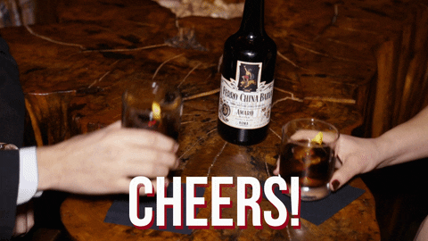

Negroni Recipe

Description
The Negroni is a simple yet flavorful cocktail that brings together the bold and bitter notes of Campari with the botanicals of gin and the sweetness of sweet vermouth. It's a well-balanced and popular choice among cocktail enthusiasts.
Ingredients
- Gin - 30 ml
- Campari - 30 ml
- Sweet vermouth - 30 ml
- Ice cubes
- Orange peel or orange slice (optional garnish)
Steps
- Fill a Mixing Glass:
- Fill a mixing glass (or a regular glass) with ice cubes.
- Add the Gin:
- Pour 30 ml of gin over the ice in the mixing glass
- Add the Campari:
- Next, pour 30 ml of Campari into the mixing glass with the gin.
- Add the Sweet Vermouth:
- Finally, pour 30 ml of sweet vermouth into the mixing glass.
- Stir:
- Take a long cocktail spoon and gently stir the mixture in the mixing glass for abour 10-15 seconds.
This helps to combine the flavours and chill the drink
- Strain and Serve:
- Place a strainer over a rocks glass filled with ice and strain the Negroni into the glass.
- Garnish (optional):
- If desired, take a piece of orange peel and gently squeeze it over the drink to release its
essential oils. Twist the peel to express the oils and then drop it into the glass.
Alternatively, you can add an orange slice for garnish.
- Enjoy:
- Your classic Negroni cocktail is now ready to be savored. Sip and enjoy the delightful
blend of bitter, sweet, and botanical flavours!

Back to Main Menu